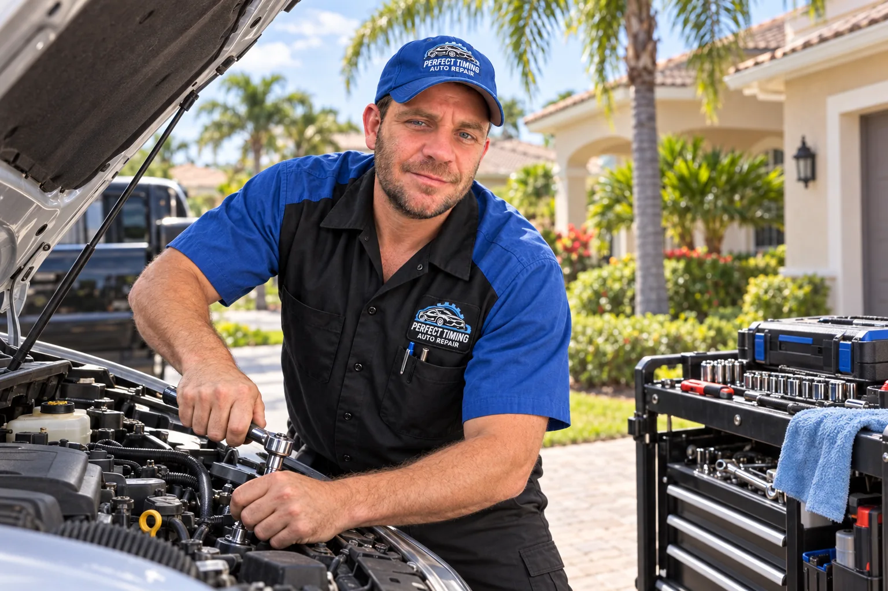

No-start diagnosis
Clicking, slow cranking or an engine that turns over without starting. Tell us what happens; Tony confirms the next step.
About this service →Perfect Timing Auto Repair · Fort Myers, FL
Car won’t start? Warning light on? Call or text Tony. We bring diagnostics and eligible repairs to your home, workplace or another suitable location in Fort Myers and nearby Southwest Florida.
Available 24/7* · Tony confirms availability and dispatch.
Want help describing it? Request a callback by text.

Tony. Your local mobile mechanic.
Call Tony any hour. Share your city, vehicle and what happens when you try to start it. Tony confirms whether he can come to you.
Let's get it figured out
Text Tony directly, or use this short form to prepare your message. Include what you know; incomplete vehicle details are okay.
Fort Myers & Southwest Florida
Mobile service at your location by appointment. Call to confirm coverage, access and the work your vehicle needs.
24/7 availability · Service by confirmed appointment
Edit the message if needed. Then open your texting app and tap Send. This page has not sent your inquiry. If your device cannot open texts or leaves the message blank, copy the message or use email. Add a callback number if you want a call, especially when using email.
Record up to 60 seconds. You can listen before sending. Include your name, phone number and vehicle details in your repair request above.
Microphone access starts only when you choose Start recording. If sending is unavailable, download the recording and attach it to your email or text.
Start with the symptoms
Plain-language repair guides: what to notice, what a mechanic may check and what to send Tony.

Who We Are
Access to a wide range of specialty tools helps Tony investigate more than a warning code. The equipment and tests depend on your vehicle and the problem; tell us what you drive so Tony can confirm the right approach.
Need your vehicle back for work or family? Tony explains the findings, parts needs and expected timing before you commit to a repair. Ask whether same-day work is realistic for your job.
Meet the Perfect Timing repair team →
What we do
Mobile options depend on the vehicle, the repair and safe access. Tony confirms what can be done at your location.
Clicking, slow cranking or an engine that turns over without starting. Tell us what happens; Tony confirms the next step.
About this service →Check-engine lights, rough running and intermittent faults. Testing helps narrow the cause before a repair is recommended.
About this service →Repeat dead batteries, charging warnings and wiring faults. Share when the problem happens and any recent work.
About this service →Warm air, cooling that fades at idle or weak airflow. We check the system rather than assume it only needs refrigerant.
About this service →Temperature warnings, coolant leaks and fan problems. Stop driving an overheating vehicle and call from a safe location.
About this service →Grinding, pulling or a change in pedal feel. Tell Tony the symptoms so he can discuss inspection and repair options.
About this service →How It Works
Skip the trip for work that can be done where your vehicle is parked. We bring professional diagnostic tools and repair equipment, explain the findings and confirm the plan with you. Some jobs need workshop equipment; we discuss that before booking.
Mobile service at your location. Illustrative service setup.
Before we head your way
Yes. Perfect Timing offers mobile auto repair by appointment in Fort Myers, Cape Coral, Lehigh Acres, North Fort Myers and nearby Southwest Florida. Share your location so we can confirm coverage and a suitable place to work.
On-site options depend on the vehicle, the fault, parts and safe access. Many diagnostic, battery, brake and electrical jobs can be handled at a suitable location. Work requiring a lift or other workshop equipment needs a different plan, which we discuss before booking.
Send your vehicle year, make and model, the symptoms, where it is parked and whether it starts or drives. Call or text (239) 397-2048, or use the repair request form. Your appointment is confirmed after our team replies.
Where We Roll
Serving drivers across Fort Myers and Southwest Florida, including Cape Coral, Lehigh Acres and North Fort Myers. Mobile service is by appointment. Call to confirm coverage, the work needed and a suitable place to work.
More ways we can help
Read about the work, then send Tony your vehicle and symptoms to confirm suitability.
Real Repair Proof
Real vehicles, real customer outcomes, and zero made-up technical details. Full testing notes and customer-safe photo sets will be added as each repair file is documented.
BMW • Oil Pan Leak
The customer says Anthony explained the issue, showed photos, provided updates, and did not push unnecessary work.
1966 Chevrolet • El Camino
The customer reports that Tony revived the classic Chevrolet and describes the work as prompt, skilled, and reasonably priced.
Outside Confirmation
These are matching public profiles for the same Perfect Timing Auto Repair LLC.
“Anthony was very honest, patient, and professional.”
“Tony is the best! He’s prompt, an excellent mechanic and very reasonable with the cost of repairs.”
“This is the kind of mechanic everyone hopes to find.”